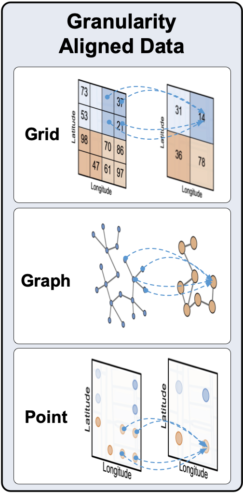

UDL Alignment
Overview
{kind=link}
API
grid_align(gridlayer, start_lat, end_lat, start_lon, end_lon, target_lat_step, target_lon_step, mode="concat")
gridlayer (GridLayer) - The grid layer to be aligned
start_lat (float) - Starting latitude
end_lat (float) - Ending latitude
start_lon (float) - Starting longitude
end_lon (float) - Ending longitude
target_lat_step (float) - The step of latitude of the new grid layer
target_lon_step (float) - The step of longitude of the new grid layer
mode (string) - The way of aggregation. “sum”, “avg”, “max”, “min” or “random”. Defaults to “avg”.
“avg”
“sum”
“max”
“min”
“random”
Grid UDL object
graph_align(graphlayer, start_lat, end_lat, start_lon, end_lon, target_lat_step, target_lon_step)
graphlayer (GraphLayer) - The graph layer to be aligned
start_lat (float) - Starting latitude
end_lat (float) - Ending latitude
start_lon (float) - Starting longitude
end_lon (float) - Ending longitude
target_lat_step (float) - The step of latitude of the new graph layer
target_lon_step (float) - The step of longitude of the new graph layer
Graph UDL object